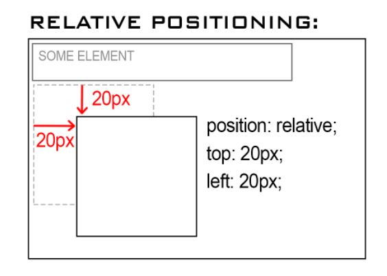

Static, Relative, Absolute & Fixed Positioning in CSS
Static Positioning
Is the default value that an element (pictures, paragraphs, etc.) will have. This means if you don’t declare a position for an element in CSS, it will automatically be set to static.
Any elements that are statically positioned will appear on the page in what we call the normal flow.
For example, if you have multiple elements one after the other, they will appear on the page directly below one another.
Relative Positioning
Like Static positioning, relative positioning is a layout value that will set your element to follow the normal flow of the webpage (I.E the element will appear below & in line of any preceeding element)
The distinction between relative and static positioning is that relative allows us to adjust our element's position in relation to the preceding element(s).
In the example below, note the CSS values which have been applied to the blank square in order to adjust it's position in relation to 'SOME ELEMENT'. These are written in the CSS document as { position: relative; top: 20px; left: 20px; }
Absolute Positioning
When applied, the absolute positioning value will cause an element to be taken out of the normal flow of the webpage; it’s essentially now on a different layer than the normal elements, so it can be positioned on top of other content on the webpage
The element will become positioned nearest to the first preceeding relatively or absolute positioned element; However, when there is no preceeding relatively or absolute positioned element, the absolutely positioned element will become positioned directly to the HTML page itself
If the absolute positioned element is a child of another element, it will overlap but stay within the boundaries of the parent element– as long as the parent has its position set
In the example below, the value for 'Some Element' is set to position relative. To change the absolute child elements position we will add the following code to our CSS to add the absolute value & adjust the position { position: absolute; top: 20px; left: 20px; }

Fixed Positioning
The fixed position value will also take the element out of the normal flow, but position it in a fixed place on the webpage. This means that scrolling will not affect its position at all, hence the position is fixed on the page.
This value is commonly used to make navigation bars that stay fixed to the top of a page as you scroll, very useful.
You can see this demonstrated right here on my blog website! Use the scroll bar to the right and notice how the menu items and social links stay fixed within the viewport? Magic!